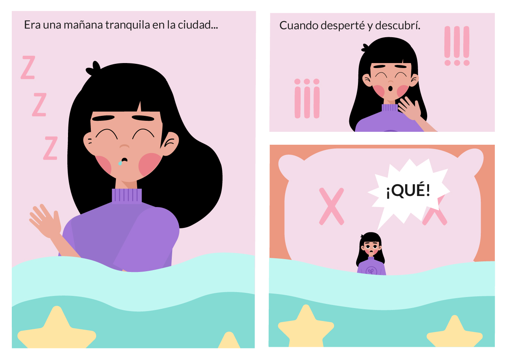
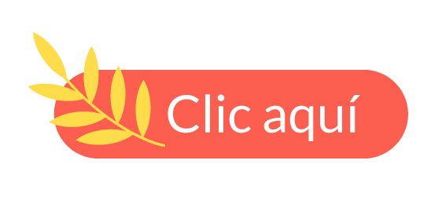

Muchas veces creemos que tenemos el control de las cosas, en nuestro caso del planeta tierra. Pero lo que no sabemos es que no tiene dueño y en algún momento se cansará de nosotros. ¿La razón? Nosotros somos el verdadero virus, aquel que daña lo que toca y solo para satisfacer nuestro deseo de obtener lo mejor. Esta es la historia de cómo la naturaleza toma su poder desde la perspectiva de una chica y su gato.
Para conocer cuál fue el video que vio la chica, haz clic en el siguiente video
También podemos ignorar lo que está pasando, hasta que la vida nos da un golpe.
Al final nos damos cuenta de nuestros errores pero la razón por la que el cambio es tan difícil es porque muchos ignoramos lo que sucede.
Nuestra protagonista decidió hacer un cambio. ¿Lo podrás hacer tú también?
Te invito a que nos cuentes cómo te sientes con el tema de la pandemia en el siguiente enlace, juntos podremos superar esta etapa de nuestras vidas si ponemos de nuestra parte.
